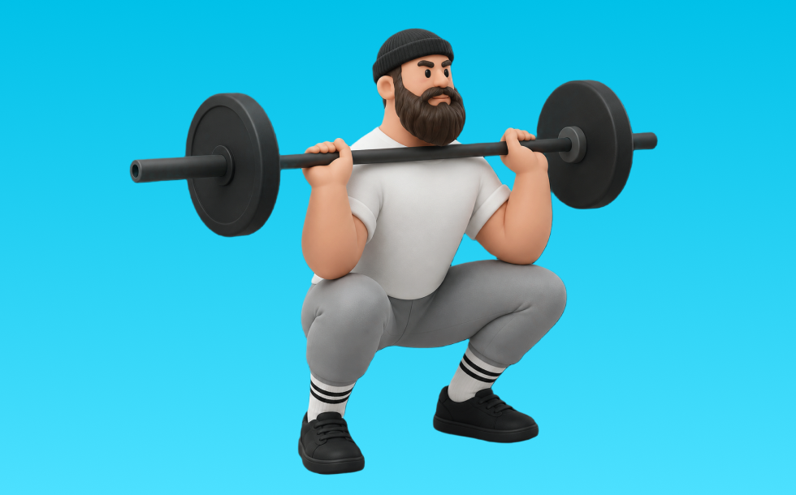

スラスター

スラスターとは、バーベルを使って「動かす」動作で脚（大腿四頭筋、臀筋）＋体幹を鍛える種目です。高重量を扱いやすく、筋力を伸ばしやすいのが特徴で、反動を抑えてコントロールしながら反復します。全身の代謝向上や運動能力アップが期待できます。
- 対象部位
- 脚
- 器具
- バーベル
- 記録形式
- 重量・回数
- 別名
- フロントスクワットプレス
YouTube動画
-
【ダンベル買ったらコレやるべし】ダンベル定番トレーニングBEST10
-
【お尻筋トレ】ヒップスラスト(バーベル)の正しいフォーム・コツ | 「腰が痛い」「やり方がわからない」という方ぜひ！
-
【永久保存版】圧倒的に強くなるスラスター攻略法（クロスフィットゲームスオープン頻出種目）CrossFit thruster strategy #crossfit #crossfitgames
-
ダンベルで全身の筋力をアップさせる複合トレーニング「ダンベルスラスター」をマスターしよう！
YouTubeショート
-
スラスター #weightlifting #ウエイトトレーニング #クロスフィット
-
スラスター（バーベル使用）
-
世界一分かりやすいケトルベルスイングのやり方#ケトルベル #kettlebell #筋トレ #workout #fitness #格闘技 #mma #体幹 #フィットネス #ダイエット #腰痛予防
-
スラスターっていう動作💪🏽✨ #ウェイトリフティング #motivation #腹筋 #筋トレ #脚トレ #方トレ #crossfit
-
DB スラスター DB Thruster
-
Clean Pull 【本当にクリーンが爆伸び！クリーンプルのやり方】 #ウエイトリフティング #weightlifting #トレーニング #瞬発力 #crossfit #シバター#矢地祐介
-
このマシン見つけたら真似してみて！ #尻トレ #ジムトレーニング #マシントレーニング #筋トレ動画 #トレーニング動画 #gymworkout #workoutvideo
-
スラスターやってみた
-
お尻トレーニングのヒップスラスト🏋️♀️これだけはやめてほしいエラーはこちら！
-
正しいデッドリフト4つのポイント#筋トレ #デッドリフト
-
約2年間筋トレをした結果
-
【バーベルスクワット】#スクワット #training #shorts
-
男性筋トレ初心者にやって欲しい絶対身体が変わる週一トレーニング4選
-
【忙しい人向け】30分で終わる脚トレ#shorts #youtubeshorts #筋トレ大学 #筋トレ #脚トレ
-
筋トレ最高‼︎筋トレは正しく・ハードに‼︎ #ハングクリーン #筋トレあるある #筋トレ初心者
-
自己ベスト80kgなるか、、、？ #Shorts #筋トレ女子 #ベンチプレス
-
【ブルガリアンスクワット】怪我なくお尻を鍛える正しいフォーム解説
-
筋トレでこれ使うと世界が変わります #shorts
-
正しいショルダープレス4つのポイント #筋トレ
-
DUMBBELL THRUSTER EFFICIENCY TIPS!!
-
【ダンベル】腕トレ４選 #筋肉
-
【筋肉つかない】自重トレ3種目 #自重トレーニング #筋トレ #フィットネス
-
[CrossFit] difference between a good DB thruster and a bad DB thruster 良いダンベルスラスターと悪いスラスター #shorts
-
体をデカく強くするケトルベルスイング #kettlebell #kickboxing #mma #bodybuilding #coreworkout #格闘技 #rizin #筋トレ #筋肉
-
150kgのダンベルを扱える数少ない人類 【世界の筋肉】
-
圧倒的なパワー・瞬発力を手に入れるオススメ種目2選 #筋トレ #瞬発力 #クリーン #スナッチ #workout #fitness #exercise #japan #mma #mmaworkout
-
【筋トレ】ヒップスラストのやり方~If you are doing this,please fix it now.~ #筋トレ#パーソナルトレーナー ＃尻トレ＃ヒップスラスト＃HipThrust
-
絶対買うべき筋トレ器具 #筋トレ #ホームトレーニング #トレーニング #筋肉 #ホームトレーニー #ボディビル #フィジーク
-
世界最大のダンベルがヤバすぎる【世界の筋肉】
-
ダンベルスラスター #shorts
-
[SYNERGY. Fitness Studio] ブーティビルダーヒップスラストのやり方 #筋トレ #エクササイズ #尻トレ
-
バーベルスクワット辞めて！
-
山本義徳のダンベルカール重量 挙げれる人います？#shorts #youtubeshorts #筋トレ#山本義徳 #山岸秀匡 #valx #筋トレ
-
【短時間】自宅でもできる5kgのダンベルのみで腕を太くするトレーニング #shorts #筋トレ #ボディメイク #腕トレ
-
マジで間違えたくないサーフスケートの正しい練習方法 #Shorts
-
鬼の背中トレ🔥 デッドリフトのやり方 #筋トレ #背中トレ #デッドリフト #マッチョ #筋肉社長
-
マッチョってダンベル何キロまで持てる？#shorts #筋トレ #ダンベル何キロ持てる
-
【ヒップアブダクション】#ヒップアップ #training #shorts
-
マシンの王道！レッグプレスの使い方動画公開中！ #Shorts #脚トレ #ジムトレ
-
【徹底討論】筋トレ初心者が絶対に脚トレをすべき理由 #shorts
-
【ダンベル】脚トレ３選
-
自宅でできる自重トレティアリスト#shorts #youtubeshorts #筋トレ #自重トレ #宅トレ #ティアリスト#筋肉博士#筋トレ大学
動作方法
- 安定した姿勢を作り、肩と体幹を固定する
- 狙う部位を意識して、反動を使わずに押す
- 可動域を保ちながら、ゆっくり元に戻す
動作ポイント
- 肩をすくめない
- 手首を寝かせすぎない
- 反動を使いすぎない
ワンポイントアドバイス
- ウォームアップで股関節と足首を動かす
- 高重量の日はセーフティ設定を確認する
目的別回数設定
目的や体力に応じた一般的な目安です。無理のない範囲で調整してください。
- 筋力アップ
- 1〜5回
- 筋肥大
- 6〜12回
- 持久力アップ
- 13〜20回
YouTube動画について
動画はYouTubeの公開情報をもとに表示しています。内容は投稿者によるもので、Biggrによる監修ではありません。
アプリを入手
筋トレやトレーニングの記録はBiggrにお任せください。今すぐ無料で使い始められます。